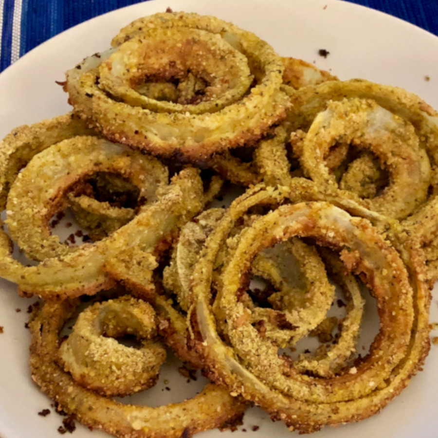

Falafel Onion Rings

Preheat oven @ 450°F
Mix in bowl:
2 eggs
1/4 cup mayonnaise
Garlic powder
Cumin
Separate bowl:
Knorr Falafel Mix
Toss onion rings in flour. Dip in wet mixture then falafel mix. Bake on oiled sheet for ~8 minutes.